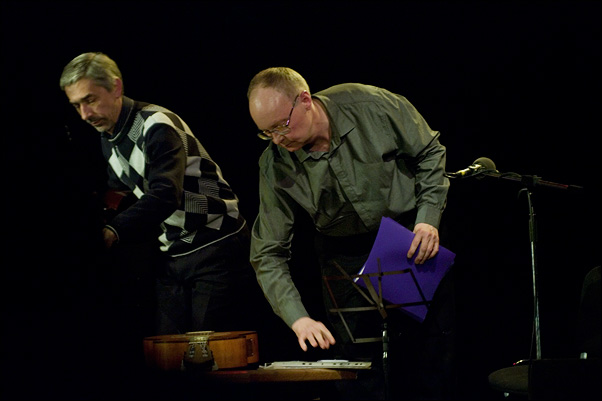

Фотографии
27 июня 2018 года ушел из жизни замечательный талантливый фотограф, путешественник, неутомимый фото-экспериментатор, очень светлый, добрый и щедрый душой человек, Дмитрий Рубинштейн.

- Фотография с концерта в Москве 8 июня 2019 г., библиотека Тургенева. Автор - Алексей Карташов.
- Фотографии с концерта в Мурманске 29 сентября 2018 г. Автор - Женя Двойнишников.
- Фотографии с концерта в Оренбурге 28 октября 2017 г. Автор - Максим Задорожный.
- Фотографии с концерта в Гиватаиме (Израиль) 16 декабря 2016 г.
- Фотографии с концерта в Санкт-Петербурге 22 сентября 2016 г. Автор - Андрей Золотых
- Фотография с концерта в Киеве 9 сентября 2016. Автор - Александр Иванов.
- Фотографии с концерта в театре Камбуровой 29 июня 2016. Фото Евгения Смирнова.
- Фотография с концерта в Бостоне 21 апреля 2016. Фото Анны Голицыной.
- Фотография с концерта в Мурманске 11 марта 2016. Фото Евгения Двойнишникова.
- Фотография с концерта в Мельбурне 28 февраля 2016.
- Фотография с концерта в Сиднее 20 февраля 2016.
- Фотографии с американских гастролей 2015 г.
- Фотографии с концерта 25 апреля 2015 в Гиперионе (Москва).
- Фотографии с концерта 8 февраля 2015 в Гиперионе.
- Фотографии с концерта 27 сентября 2014 в Гиперионе, автор nataljusha.
- Фотографии с американских гастролей 2014 г.
- Фотографии с концерта в Карлсруэ 13.09.13.
- Фотографии Вячеслава Коротихина с концерта 12 апреля 2013 г. в РГДБ.
- Фотографии Юлии Архитекторовой с концерта в "Гнезде глухаря". Москва, 9.01.13.
- Фотографии с концерта 11.11.12 в Принстоне. Автор LIRA
- Фотография с концерта в Астане 20 октября 2012 г.
- Фотографии с концерта на Малой сцене фестиваля ПЛАТФОРМА-2012 7 июля 2012 г.
- Фотографии Алексея Минаева с концерта в Калифорнии, Mountain View, 19.02.2012.
- Фотографии с концерта в "Гнезде глухаря",
Москва, 8 ноября 2011.
- Фотография с московского концерта 17 октября 2011. Ещё фотографии с этого концерта (много - ссылка на FaceBook).
- Фотографии с одесского концерта 11 сентября 2011.
- Фотография с концерта в "Гнезде глухаря",
Москва, 9 июня 2011. Прислал Даниил Крылов
- Фотографии с концерта в Калифорнии, Mountain View, 18.12.2010.
- Фотографии с концерта 19.10.10 в Минске.
- Фотографии с выступлений в Израиле 2010 г.
- Фотографии из буклета к диску серии "Российские барды", 2010.
- Фотографии с концерта в Санкт-Петербурге 30 мая 2010 года. Автор arhivolt.
- Несколько фотографий из архива Калужского КСП. Фотографии Алексея Кузнецова и Михаила Щербакова. Прислал М. Н. Щербаков. Реставрация - Кари.
- Творческий вечер в Москве в Политехническом музее 18.12.09. Фотографии Любавы Малышевой (источник).
- Фотографии с гастролей в США. Ноябрь 2009.
- Фотографии Дмитрия Рубинштейна с концерта в ДомЖуре 16 мая 2009 года.
- Фотографии Владимира Палта с концерта в ДомЖуре 14 марта 2009 года.
- Фотографии Дмитрия Рубинштейна с концерта в ДомЖуре 8 ноября 2008 года (больше - здесь).
- Фотографии с гастролей в США, сентябрь 2008.
- Фотографии с концерта 08.02.08 в Cupertino, CA, USA. Автор Alexei Minayev.
- Фотографии с концерта 26.01.08 в Morristown, NJ, USA. Автор LIRA.
- Концерты 25.02.07,
25.03.07,
13.04.07,
26.05.07 и
27.10.07 в ЦДЖ. Фотографии
Дмитрия Рубинштейна.
- Фотографии с концерта 15.01.07 в Минске. Автор LIRA.
- Фотографии с гастролей 2006 г. в Америке. Автор LIRA.
- Концерт 29.09.06 в ЦДЖ. Фотографии
Дмитрия Рубинштейна.
- Концерт в Пало Альто (Калифорния) 4 марта 2006-го года.
Фотографии Юрия Сюганова.
- Концерт 24.02.06 в ЦДЖ. Фотографии
Дмитрия Рубинштейна.
- Фотографии с концерта 22.10.05 г. в ЦДРИ.
- Фотографии с гастролей 2005 г. в Минске. Автор LIRA.
- Концерт 29.05.05 в "Гнезде глухаря". Фотографии
Анны Кутузовой.
- Концерт 12.04.05 в Бард-клубе "Шале". Фотографии
Дмитрия Рубинштейна.
- Концерт в Бруклине 22.05.2005. Фотографии
Серика Кульмешкенова.
- Концерт 5.02.05 в "Гнезде глухаря". Фотографии
Дмитрия Рубинштейна.
- Фотографии с гастролей в Израиле: концерт 22 января 2004 г. в Иерусалиме, 28 января - Нес Циона, 29 января - в Тель-Авиве.
- Концерт в Доме ученых в Жуковском 08.11.04.
Фотографии Михаила Колпашникова.
- Концерт в ДК МГУ 22.12.04. Фотографии
Дмитрия Рубинштейна.
- Фотографии работы Алексея Гольянова (сайт автора)
- Фотография с концерта 31 октября 2003 г. в Политехническом работы Татьяны Скворцовой.
- Фотографии работы Дмитрия Рубинштейна
(М. Щербаков и М. Стародубцев) с концертов в Москве (2002 - 2004 гг.).
На сайте автора можно посмотреть оригиналы и другие его работы.
- Фотографии с гастролей 2003 г. в Америке.
- Фотографии с концертов в Минске:
1996, 1998, 2000. И еще одна с концерта в Нью-Йорке, 2003 (автор LIRA).
- Фотографии Алексея Меллера (М. Щербаков и М. Стародубцев) с двух концертов в Москве (2000 г.)
- Фотогалерея с концертов в Пало Альто (Калифорния): в октябре 1999 г.
и в мае 2001 г. Cпасибо В. Фуксману
за фотографии. Больше можно увидеть на сайте.
- Фотографии с сайта Игоря Грызлова
apksp.narod.ru (с любезного разрешения автора). Фотографии будут использованы при оформлении новых дисков.
-
Три фотографии с концерта Михаила Щербакова в Ringwood, NJ 05/04/2001. Автор - Дима Дугинов.
- Фото с концерта в Питере, 19.05.2000 г. Прислала Л. Воскресенская.
- Фотографии с концерта в Париже 22.06.2000 г.
-
"Я обещал себе курить раз в час..."
«Прекрасный фотопортрет (именно фотопортрет, а не фотография) Щербакова,
... используемый во многих афишах,
имеет автора. Его зовут Исаак Ременюк, живёт он в Simi Valley, в Калифорнии.» -
Вот такая поступила информация.
- Две фотографии Артема Казанцева
с концерта 1997 г. в Вашингтоне.
-
Фотография из иерусалимской газеты "Вести", 1996. Прислал
М. Пасуманский.
-
М. Щербаков в Хайфском клубе самодеятельной песни. Февраль
1996. Прислал Эли Бар-Яхалом.
-
Фотографии, сделанные на на концерте 26.01.1995 года в
Фонде общественного мнения (в Москве). Работа В. Палта.
-
Фотография из газеты "Собеседник", 1992. Фотограф - Александр Ефремов (см. также
статью оттуда).
-
Фотография с обложек кассет #1-8 (старая,
теперь там совсем другие фотографии.)
-
Фотография с форзаца книжки "Вишневое Варенье".
(Записка: "Почему на этой фотографии Вы такой красивый?") Фото 1990 г.
- Щербаков в Киношколе, 1990-1991 гг. (из ФБ, ЖЖ).
-
Фото из книги "Другая жизнь".
- Четыре фотографии Щербакова со страницы Виталия Гуткина.
-
М. Стародубцев и М. Щербаков, концерт в ДК МЭЛЗ, 1989 г. Фото И. Филатова (взято в ЖЖ).
-
Фотография c форзаца обложки диска
"Воздвиг я памятник". Прислала Л. Воскресенская.
-
Рекламная открытка, выпущенная Московским турклубом в 1988 или 1989 году.
Прислали В. Палт, А. Астрелин
- КСП "Восток", 15 июня 1988 (источник - ВК, Игорь Стесев; ссылка в ЖЖ).
Реставрация - joook.
- Фотографии Тани Каган. Теплый Стан, сентябрь 1988.
- Фотографии с концерта в Минске 1988. Фото Александра Шатерника.
- Фотографии 1986 года, Красноярский край.
- Барзовка, 1984. Фотографии с сайта "КСП «Товарищ гитара», Кишинёв, фотоархив 1983-1998гг." Автор Слава Пустовит, оригиналы здесь и здесь.
-
Фотографии с сайта bard.ru:
две фотографии начала 80-х (автор неизвестен)
и еще две (Фот.: И. Каримов).
-
Фотография с обложки кассеты "Мое Королевство",
изданной объединением "Московские Окна". Бутлег, естественно - то есть,
с продажи этой кассеты автор не получает ни копейки. Игорь Грызлов утверждает,
что он видел в продаже более 10 разных бутлегов Щербакова, в том числе
вот такие вот страшные (и, соответственно, вот
такие). Это не сканер виноват, это они и в самом деле такие.
[Наверх]
Иллюстрации
Об иллюстрациях к песням - см. также Словарь Заморских Слов
- Иллюстрация Елены Ерофеевой к песне "Быстров".
- "Двенадцать лун на знамени моём" (Восточная песня 1).
- Иллюстрация к песне Если.
- Иллюстрация к песне Караван.
- Иллюстрация к песне East coast.
- Иллюстрация к песне Волхонка.
- Картины Репина "Девятый вал".
- Иллюстрация к песне Суставы.
- Эскизы обложки для книги песен Щербакова "Люди сухопутья", готовившейся к изданию Калужским КСП (1991 г. - проект, судя по всему, не осуществился). Автор - М. Н. Щербаков.
- Иллюстрации к песне
"Быстров" работы zaglyanula (оригиналы и еще несколько иллюстраций -
тут и там).
- Иллюстрация к
"Песне пажа" работы ackat (оригинал здесь). Ссылку прислал Oleg Pisman.
- Данс-макабр - иллюстрация к песне
"Школа танцев 2" работы pinguinchen, оригинал здесь. А здесь - еще одна иллюстрация того же автора (Descensus ad inferos).
- "Рыба, шепни два слова. Взмахни руками. Жива, жива" -
иллюстрация к песне
"Рыба" работы Дмитрия Полонского. 1998 г.
- Работа Тани Каган, год приблизительно 1988.
- "Вот и якорь стальней стальнейшего..." -
иллюстрация к песне
"Красные ворота" от
kasmunaut.
- "Рыба в стеклянном шаре меня смущает..." - еще одна
иллюстрация к песне
"Рыба" от hwy (автор неизвестен).
- Иллюстрация к песне
"Караван". Копирайты на фотографии, прислала Елена Коротеева.
- Иллюстрация к песне
"Рыба"
- работа mosomedve-art.
Оригинал здесь.
А вот здесь -
муравьед (того же автора), который вполне мог бы быть иллюстрацией к
"Австралии".
- Иллюстрация к песне
"Вишнёвое варенье"
- фото riftsh. Здесь - еще одна его находка - "неподвижные рыбы стояли".
- Иллюстрация к песне
"Травиата". Прислала Alhen.
- Иллюстрация к песне "Варьете".
Прислал В. Медведев.
- Иллюстрация к песне
"Аллегро". Прислал В. Медведев.
- Иллюстрации из книжки "Вишневое варенье"
(Оформил Денискин).
- "Музыка в Тюильри" - картина
Эдуарда Мане
(к песне "Автопародия").
(Прислал Денискин).
- Гигантский муравьед
по имени Лямбда - вероятно, тот самый - из "Австралии".
- Картинки — лирические герои песен Щербакова.
Ссылку прислала Змейка.
-
Парабола Лобачевского - образ из "Песенки о молодости".
Рисунок Володи Смирнова. См. также его комментарий.
-
Деталь картины Иеронима Босха "Страшный Суд"
с той самой девочкой (отсканировано и прислано Еленой Коротеевой). Там,
правда, все немножко не так - чудищ маловато, девочка расположена не в
центре композиции, и идет она куда-то не туда - но, в общем, не исключено,
что именно эта картина вдохновила Маэстро на написание "Descensus Ad Inferos"
(Картина полностью
в WebMuseum, Париж).
-
"Ночной дозор", картина Рембрандта
-
Витраж в Большой Синагоге в Иерусалиме,
который "не имелся в виду" Щербаковым в песне "Волк".
-
Аменхотеп III. Прислал М. Пасуманский
-
"Уже рододендрон зацвел". Эту красоту размером 160 Кб прислала Марина Вольпе. И еще один
рододендрон в цвету, более скромный (акварель П. И. Борисова).
-
Улица Дель Корсо в Риме (© 1996 Gianni Leuti)
-
Любимый автобус Щербакова, номер 666-й. Фото из газеты "Московский комсомолец".
Прислала Л. Воскресенская.
-
Карта маршрута героя песни "Петербург".
Прислал В. Иванов.
-
"Монумент известный" - на фоне замка, где был задушен известно кто.
Прислал В. Добрецов.
-
"Снега Джомолунгмы".
И еще один вид на те же снега (со стороны Тибета). Прислал В. Добрецов.
-
Главный крот. Дивная картина из компьтерной игры "Twigger", разработанной фирмой
"Никита". Может, это случайность, но почему бы и нет?
- И еще два крота под маркой "Крот МЩ". Опять совпадение...
[Наверх]
Вокруг дисков
|

{kind=link}
{kind=link}
{kind=link}
{kind=link}
{kind=link}
{kind=link}